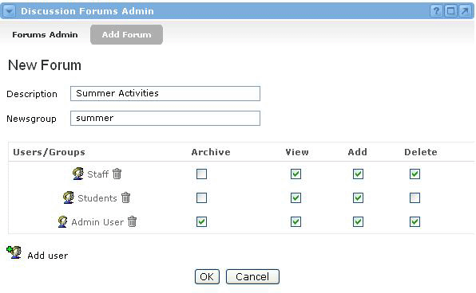

Setting Permissions for the Forum
Now that you've added users and/or groups to the forum, you need to assign privileges to these users and groups before they will be able to access the forum messages. There are four different permission settings:
- Archive - This allows a user to archive the forum, which removes it from all users' view. It does not permanently delete the forum, though. Archived forums can always be "unarchived."
- View posting - This allows a user to view all the messages posted within the forum.
- Add posting - This allows a user to post new messages as well as reply to other users' messages.
- Delete posting - This allows a user to delete any messages that have been posted, regardless of who wrote them. A user will always have privileges to delete their own posts.
To grant permissions to users and groups for any of these settings, check the corresponding boxes on the matrix. To remove permissions from users and groups, uncheck the corresponding boxes on the matrix. When all changes have been made, click the OK button.
